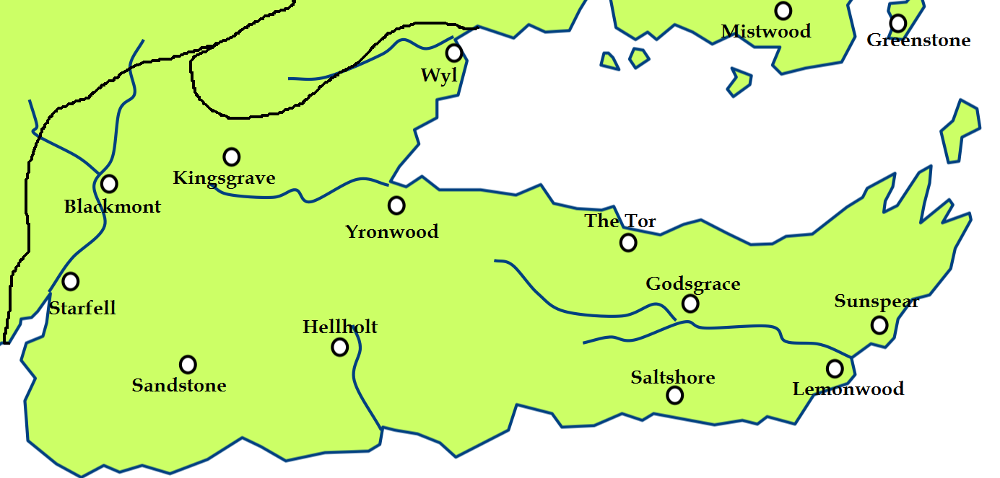
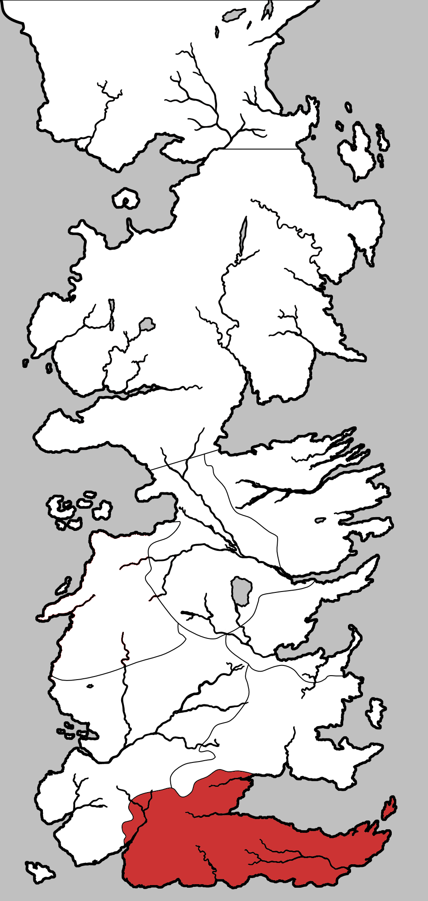

Dorne
Dorne is large peninsula which makes up the southern-most part of Westeros, and is one constituent regions of the Seven Kingdoms. Its capital is Sunspear and the lords of the ruling House Martell still style themselves “Prince” and “Princess” in the Rhoynish fashion.
Dorne is bordered by the Sea of Dorne to the north, the islands known as the Stepstones to the east, and the Summer Sea to the south. Stretched between them is the mountain range known as the Red Mountains, which separates Dorne from the remainder of the Seven Kingdoms by land. There are only two major passes though the Red Mountains, connecting Dorne with the rest of the continent by land, the Stone Way Pass and the Prince’s Pass. The Prince’s Pass leads to the Reach, while the Boneway exits the mountains near Summerhall.

Map on Next page.
